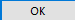
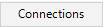

from sikuli import * Settings.OcrTextSearch=True Settings.OcrTextRead = True import os import time now = time.strftime('%d') directory = ('/tmp') logs = ('/tmp/errorlogs') def errorLogs(): if not os.path.exists(directory): os.makedirs(directory) if not os.path.exists(logs): os.makedirs(logs) def outputErrorMessage(message): my_dir = "c:\\tmp\\errorlogs\\" el = "\n" my_file=file(my_dir + "ERRORS.txt" , "a")#open a file. r,w,a a here is append my_file.write(message+el) my_file.close() outputErrorMessage("Test Started: " + time.strftime('%d/%m/%Y')) def checkTabs(): if exists("repmanfiletab.PNG"): click("repmanfiletab.PNG") else: outputErrorMessage("Repository Manager File tab missing.") if exists("repmanrepositoriestab.PNG"): click("repmanrepositoriestab.PNG") else: outputErrorMessage("Repository Manager Repositories tab missing.") if exists("repmanservertab.PNG"): click("repmanservertab.PNG") else: outputErrorMessage("Repository Manager - Servers tab missing.") if exists("existingsqlserver.PNG"): click("existingsqlserver.PNG") click("repmanMakeDefaultButton.PNG") else: click("repmanaddserverbutton.PNG") if exists("addServerNameField.PNG"): type("DESKTOP-I2L5R4O\SQLL2014") click("nativeSQLcheckBox.PNG") type(Key.TAB) type("sa") type(Key.TAB) type("Ts0rg123") click() if exists("authenticationfield"): type("sa" + Key.TAB) type("Ts0rg123") click("authcheck.PNG") click("authstorecredentials.PNG") click() click("repmanMakeDefaultButton.PNG") else: outputErrorMessage("SQL Server created. Continuing test.") def addRep(): if exists("repmanCreateRepOnServer.PNG"): click("repmanCreateRepOnServer.PNG") else: outputErrorMessage("Repository Manager - Create Repository on server button missing.") if exists("repositorynamefield.PNG"): type("MooD Test") type(Key.TAB + Key.TAB + Key.TAB + Key.TAB + Key.TAB + Key.BACKSPACE + Key.BACKSPACE) type("sa" + Key.TAB) type("Ts0rg123") click("createbutton.PNG") wait(4) def openCreatedRepository(): doubleClick("repicon.PNG") click("openbarep.PNG") wait(4) wait("bawelcomeshowstatusoflastconnection.PNG") def configureManageThemes(): click("openmanagethemes.PNG") click("clickthemesoption.PNG") wait(1) click() click("managethemestandardrelationships.PNG") click("newstandardrelationshiptype.PNG") type("process to many" + Key.TAB) click("canrelateto.PNG") click("tickcanrelatetoprocess.PNG") click("tickprocessactivity.PNG") click("tickcanrelatetomanyelements.PNG") click("selectmanagethemesThemestab.PNG") click("expandprocesstheme.PNG") click("managethemeselectprocess.PNG") click("processdefinitiontab.PNG") click("definitionrelationshiptab.PNG") click("setrelationshipcreated.PNG") click("managethemesokclosebutton.PNG") #def createProcess(name, parent=None): # if parent is None: # add the new process to the Processes theme directly # click(Pattern("Explorer Tree Processes-1.png").targetOffset(59,-3)) # click to the right so the tooltip does not get in the way # else: # use OCR to select the parent process # textRegion = findText(parent) # click(textRegion) # type("n", Key.CTRL) # type(name) # Example create a Process with ten children #createProcess("Parent") #for i in range(1,2): # createProcess("Child%d" % i, "Parent") # wait(0.03) #outputErrorMessage("New processes created") def ProcessModel(): doubleClick("parentProcess.PNG") click("pcmSymbol.PNG") click("ribbonSizeOption.PNG") click("sizeMore.PNG") doubleClick("processmodelformatstylesizewidth.PNG") type("100" + Key.TAB + "100") click("formatstyleokbutton.PNG") dragDrop(Location(Location(1231, 529)), Location(Location(916, 295))) def openActionsMenu(): click("ribbonactionsmenu.PNG") click("formattedtexteditor.PNG") click(Location(1261, 345)) click("fteditorclicktoselect.PNG") click("fields.PNG") click("datanavigatorformattedtextfield.PNG") click("datanavigatorpurpose.PNG") click("fteokbutton.PNG") click("ribbonfilebutton.PNG") click("ribbonsaveall.PNG") def cleanUp(): rightClick("parent2delete.PNG") click("deleteProcess.PNG") type(Key.TAB + Key.ENTER) type(Key.TAB + Key.TAB + Key.TAB + Key.ENTER) #App.open(r"C:\Program Files (x86)\MooD\16\RepositoryManager.exe") setBundlePath(r"C:\sikuli\rep-man-images") wait(3) #errorLogs() #outputErrorMessage('End of Line....') #checkTabs() #addRep() #openCreatedRepository() #configureManageThemes() #ProcessModel() #openActionsMenu() cleanUp()